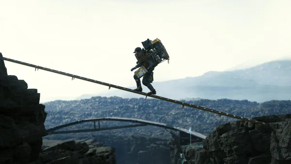
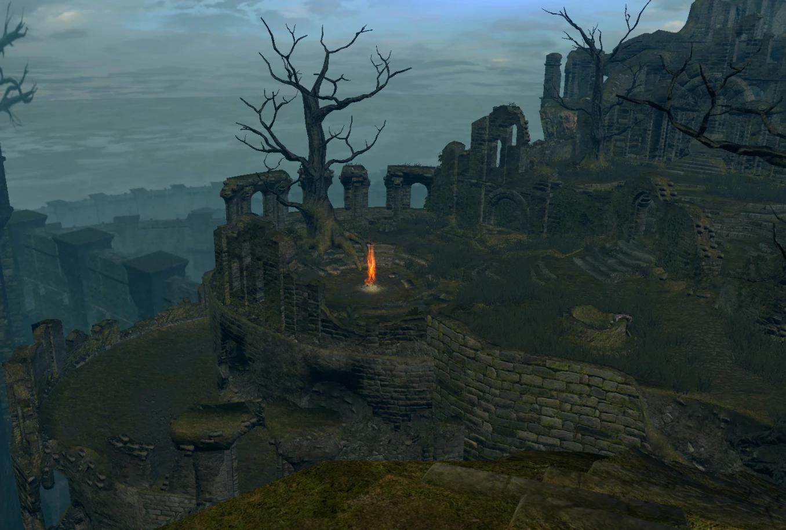
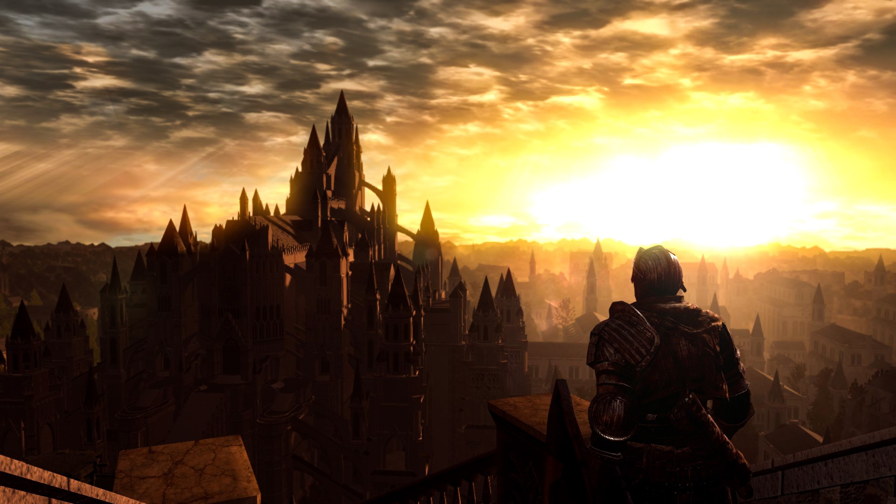
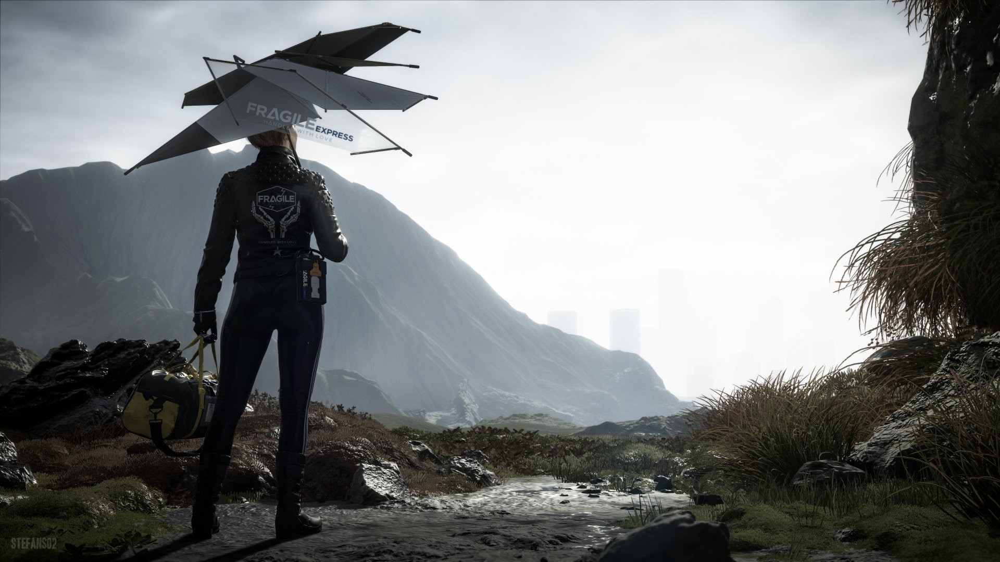
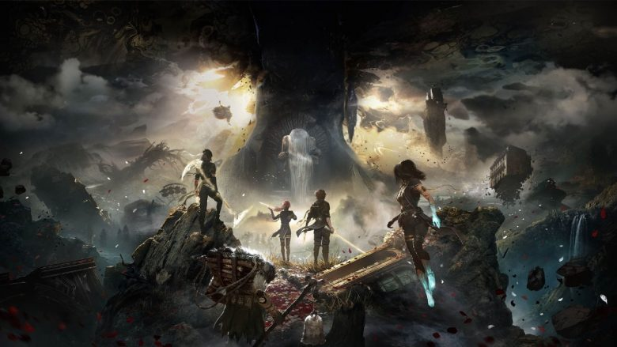
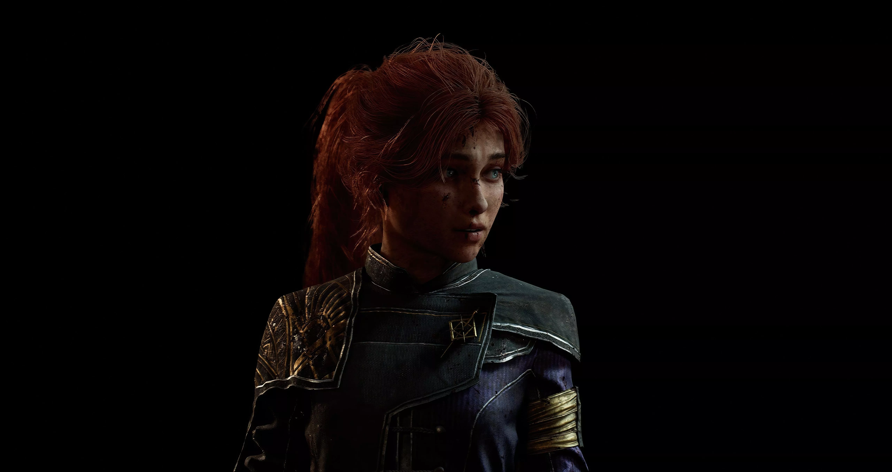
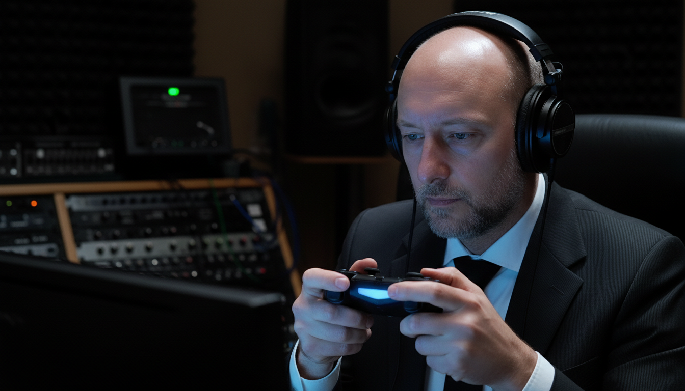

Siamo arrivati alla vetta. Se siete ancora qui significa che questo viaggio tra le pieghe della musica per videogioco vi ha colpito — e non posso che ringraziarvi. Tre titoli, tre viaggi che non dimenticherete mai. Varchiamo insieme la soglia dell'Olimpo.

Dark Souls — Motoi Sakuraba, 2011
Freddo, pietra, una solennità che toglie il fiato. Partiamo da Lordran e dalla sua musica — quella musica che vi avverte, dal primo secondo, che siete entrati in un limbo tra la vita e la morte.

Se analizziamo Firelink Shrine con l'occhio del musicista, notiamo una cosa straordinaria: la sua natura non teleologica. In filosofia la teleologia è la dottrina che considera l'esistenza di uno scopo delle cose. In musica significa semplicemente che un tema solitamente va da qualche parte — una successione di note segue un disegno preciso, c'è un fine dietro ogni salita o discesa. Ebbene, qui tutto questo svanisce. Gli archi di Sakuraba si muovono per semitoni, creando un'armonia cromatica che sembra galleggiare. Nella tesi di Bryant "The Sound Between Lordran and Yharnam" viene definito come leitmotiv atmosferico. Come EastShade, direte voi — ma qui il leitmotiv atmosferico non si limita a descrivere un luogo: lo disegna. E ciò che disegna è la stasi, l'immobilità, l'inerzia.
È un tema che non si risolve mai, proprio come il ciclo del fuoco nel gioco. Resta sospeso, regalando una sensazione di pace intrisa di stanchezza millenaria. Il colore musicale della polvere e della cenere.
Qui è necessaria una parentesi. Molti studiosi sostengono che Bloodborne sia l'apice della produzione FromSoftware, anche nella musica. In Bloodborne regna il caos, il massimalismo orchestrale, un uso espressionista della dissonanza per descrivere la follia. Tecnicamente ineccepibile — e sono d'accordo. Ma perché allora Dark Souls? Per motivi tecnici e motivi intimi, entrambi reali.
Tecnicamente: Dark Souls usa il diatonismo — l'uso degli intervalli non alterati nelle armonie e nelle melodie — in modo più umano e, per me, più tragico. I cromatismi di Bloodborne dipingono l'orrore. Nella tremenda pace del diatonismo di Dark Souls si trova il lutto. C'è una differenza filosofica enorme: l'orrore ti respinge, il lutto ti avvolge. I temi di Bloodborne sono tecnicamente superiori — eppure nella semplicità di Lordran ci ho lasciato il cuore.

E poi c'è Gwyn, Lord of Cinder. Qui Sakuraba compie un atto di ribellione artistica. La musica viene usata per decostruire il nemico. È un pezzo per pianoforte solo — nient'altro. Un tema scarno, una scala minore che evita costantemente ogni risoluzione eroica. Siete arrivati alla fine del mondo aspettandovi l'apocalisse sonora, e invece trovate un funerale per pianoforte solo.
Questa scelta trasforma il gameplay in liturgia. Non state cliccando tasti per vincere: state partecipando all'ultima danza funebre di Gwyn. La musica vi impone di provare pietà. Lui è l'ombra di se stesso ormai, e il pianoforte ne sottolinea la vulnerabilità solitaria. Il boss finale non è un ostacolo — è una vittima. Di fronte a questo nemico che attacca disperatamente, cieco d'ira, sorretto da questa musica solitaria, capiamo subito che la nostra sarà una vittoria di Pirro. È come se l'entropia si facesse suono. Ed è qui che la musica smette di aiutare il gioco e diventa pura narrazione.
Death Stranding — Ludvig Forssell, 2019
Se Dark Souls era il lutto, qui troviamo la ricostruzione. Death Stranding è un viaggio di riconciliazione, e per raccontarlo Kojima e il compositore Ludvig Forssell hanno fatto qualcosa di inaudito: hanno annullato il confine tra musica e sound design.

Abbiamo già incontrato questa fusione in un altro punto della classifica — Ico, posizione 9. Ma qui si è andati oltre. Forssell racconta nelle interviste di aver percosso oggetti metallici e ogni tipo di materiale per creare le ritmiche del gioco, perché non sembrassero scritte, ma come emerse direttamente dal paesaggio. Sintetizzatori vintage come il CS-80 della Yamaha, campionamenti industriali, un continuo tappeto di pad e arpeggiatori che imitano il vento, la cronopioggia, il pericolo. In Death Stranding il suono ha un peso specifico, una densità che ti schiaccia mentre cerchi di scalare una montagna con il carico sulla schiena. È musica concreta applicata al gaming.
Ma il colpo di genio vero avviene quando questo caos industriale improvvisamente tace. Immaginate di iniziare un lungo viaggio da soli attraverso una valle impervia. Nel momento esatto in cui vi sentite spauriti, esausti, la telecamera si allontana e parte una canzone. Non un tema orchestrale — una canzone. Con voce, melodia, accordi.
In quei momenti avviene un fenomeno psicologico e musicale unico. La canzone non è un elemento estraneo: fa contrasto con le texture aspre del paesaggio. La malinconia di brani come Don't Be So Serious o Asylum for the Feeling trasforma quel momento in una stasi diversa da quella di Dark Souls. È una pace musicale. Come se il mondo smettesse di farvi la guerra e vi abbracciasse.
Kojima ha usato la struttura della canzone per rappresentare la civiltà, il calore umano, la speranza — contrapponendola al rumore, al caos ordinato del mondo esterno. È la musica che si fa casa.
E poi c'è il BB's Theme. Una ninna nanna — forma musicale ancestrale — che attraversa l'intero gioco e si evolve. Nella sua forma finale l'orchestra è immersa in riverberi shimmer, con arpeggiatori che riappaiono lontani come echi di un mondo che ricorda di esistere. La voce di Jenny Plant declama una melodia che deve moltissimo al Badalamenti di Twin Peaks. A volte sembra perdersi nei suoni tecnologici, sommersa, sporcata nel timbro — eppure riemerge con forza.
Trovo straordinario il salto: dal rumore industriale dei synth alla dolcezza di una melodia che potresti cantare a un bambino, ma che nasconde intervalli capaci di riflettere sulla malinconia della condizione umana. È una metafora perfetta del mondo di Death Stranding — un mondo dove la tecnologia ha distrutto tutto e contemporaneamente sta salvando tutto. La tecnologia è il pericolo che sporca la voce, ne turba la purezza; ma è anche l'opportunità, rappresentata da quegli arpeggiatori ciclici che lottano per ricucire la trama del mondo.
Sono le voci che curano l'anima del giocatore. Da cantante capite perché trovo questa soundtrack straordinaria — è la sensazione di aver ascoltato un unico immenso respiro musicale coerente, dove la voce umana, il mio strumento, è il tramite per un nuovo rapporto tra uomini.
Clair Obscur: Expedition 33 — Lorien Testard, 2025
Arriviamo alla vetta. E non poteva che esserci lui. Se i titoli precedenti erano viaggi, questo è un'ascensione.

Lorien Testard ha creato un'opera di oltre otto ore che non è solo una colonna sonora: è un manifesto estetico. Il suo genio sta nel saper stare perpetuamente sul filo del rasoio — tra il kitsch e il freddo, tra il banale e l'accademico. E questo filo si chiama contrasto. C'è contrasto ovunque, in ogni brano, in ogni scelta orchestrale.
Prendiamo Aline. Un brano che sembra venire da un tempo ancestrale — la lingua inventata elimina ogni barriera culturale. Quando ascoltate i salti di ottava in head voice, non state ascoltando un mezzo soprano: state ascoltando il dolore di una madre. Il tempo crea poi un senso di valzer interrotto: la strofa in 6/8, il ritornello in 2/4. L'abbiamo già vista questa cosa — in Ico erano unite. Qui no, qui sono spezzate. È un non-finito michelangiolesco. Una danza tra la vita e il vuoto.

Prendiamo Lumière. Il 2/4 procede leggero ma inesorabile — suona come un canto per bambini e insieme un corale epico. L'organico è minuto: quartetto d'archi, pianoforte, chitarra. Un'oasi di luce in un mondo senza speranza. I pizzicati imitano il battito del cuore, il ticchettio del tempo che prepara al gommage.
E poi Une Vie à t'aimer: inizia fragile, cameristica, poi deflagra in una commissione tra opera e progressive metal. Il lirismo di Dupon Percier contro il graffiato di Victor Borba — l'eleganza del canto lirico che contrasta con l'urlo tecnico del cantante metal. Se non è contrasto questo.
La rottura definitiva, il contrasto forse più forte, la troviamo in Monaco. In un'opera colta irrompe l'improvvisazione: il sassofono jazz, sporco, violento, su un accompagnamento che ricorda i videogiochi anni Ottanta. È l'improvvisazione che irrompe nella liturgia convenzionale di una partitura scritta. Ci ricorda che nell'entropia di un mondo che sta per essere cancellato c'è ancora spazio per la festa, per il vino, per la vita.
Testard non è Mahler. Non scrive su armonie rivoluzionarie. Il suo genio sta nella sensibilità teatrale e nel saper usare esattamente le note che servono per scrivere una melodia catchy, eppure drammaticamente efficace e inedita per le soundtrack contemporanee.

Ma c'è una ragione più profonda per cui Expedition 33 è al primo posto. Spesso pensiamo alle colonne sonore come a meccanismi — ingranaggi sonori costruiti per funzionare, per riempire un silenzio, darci un ritmo durante il combattimento. Qui invece siamo di fronte non a un meccanismo, ma a un organismo. Un organismo non funziona soltanto — vive.
La musica non esisterebbe senza la storia. La storia non avrebbe la forza che ha senza questa musica e i suoi contrasti. Insieme divengono quel misterioso prodotto artistico che l'uomo è solito chiamare "classico" — dove l'arte smette di essere finta e pare invece vera. Tutti noi giocandolo abbiamo avuto il momento in cui abbiamo pensato: questa cosa è vera, questo momento è vero. Eppure non c'è nulla di reale, non esiste nessuna pittrice. Siamo semplicemente di fronte al miracolo dell'arte — quel rito misterioso che permette all'uomo di riconoscere se stesso in uno specchio di suoni, di colori, di emozioni e di storie in chiaro scuro.

E siamo arrivati alla fine di questo lungo viaggio. So che in molte analisi ho volato alto, toccato concetti filosofici e tecnici non sempre immediati. Vi ringrazio per la pazienza. E vi invito a scatenarvi nei commenti — sul canale e qui sotto: qual è la vostra posizione numero uno di sempre?